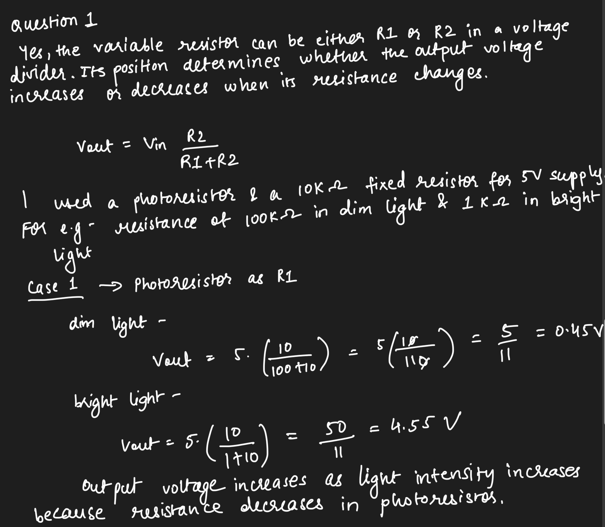
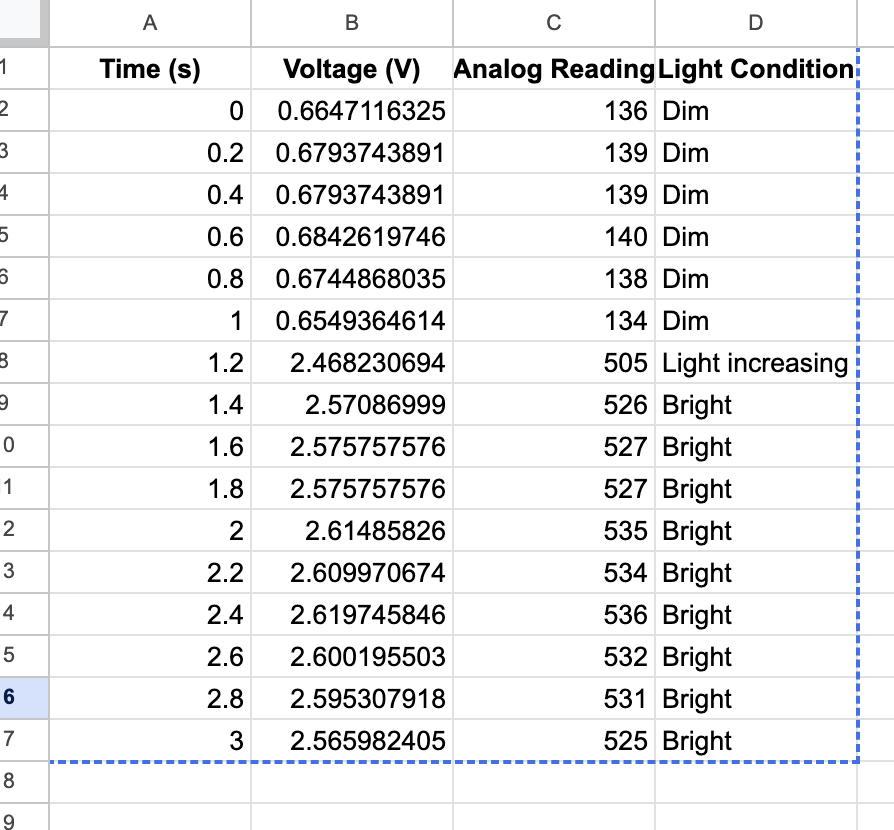
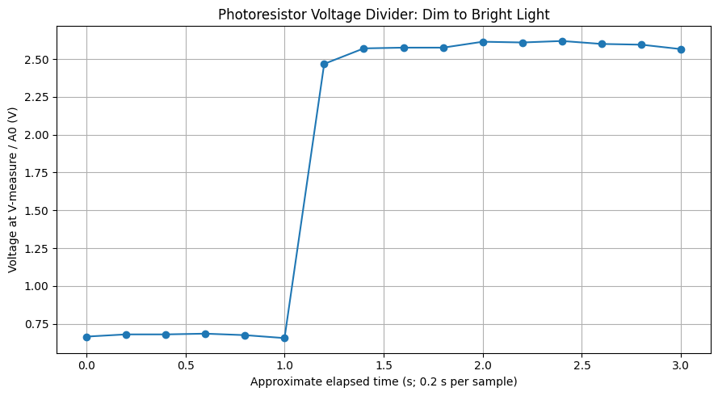

const int sensorPin = A0; // I use A0 to read the voltage from my photoresistor.
// I use PWM pin D11 to control the LED's brightness.
const int ledPin = 11;
// I use digital pin D12 to control the buzzer.
const int buzzerPin = 12;
// I set the lower end of my example sensor calibration range to 93.
const int sensorMin = 93;
// I set the upper end of my example sensor calibration range to 930.
const int sensorMax = 930;
// I run this setup function once when my Arduino starts.
void setup() {
// I start serial communication at 9600 baud so I can view sensor readings.
Serial.begin(9600);
// I set the LED pin as an output so I can control its brightness.
pinMode(ledPin, OUTPUT);
// I set the buzzer pin as an output so I can turn the alarm on and off.
pinMode(buzzerPin, OUTPUT);
// I print a message to let me know that my light alarm is ready.
Serial.println("Light Alarm is ready!");
}
// I repeat this loop continuously while my Arduino is running.
void loop() {
// I read the photoresistor's voltage as a value between 0 and 1023.
int sensorValue = analogRead(sensorPin);
// I keep the reading within my chosen calibration range.
int calibratedValue = constrain(sensorValue, sensorMin, sensorMax);
// I map the calibrated sensor reading to a brightness value from 0 to 255.
int brightness = map(calibratedValue, sensorMin, sensorMax, 0, 255);
// I use PWM to adjust the LED's brightness based on the sensor reading.
analogWrite(ledPin, brightness);
// I check whether the sensor reading is above my threshold of 512.
if (sensorValue > 512) {
// If the reading is above 512, I make the buzzer produce a 1000 Hz tone.
tone(buzzerPin, 1000);
// I print a message to show that bright light has activated my alarm.
Serial.println("Bright light detected! Alarm ON");
} else {
// If the reading is 512 or lower, I stop the buzzer.
noTone(buzzerPin);
// I print a message to show that my alarm is off in lower light.
Serial.println("Low light detected. Alarm OFF");
}
// I print the raw sensor reading so I can monitor changes in light.
Serial.print("Sensor reading: ");
// I display the current sensor reading.
Serial.print(sensorValue);
// I separate the sensor reading from the LED brightness in the output.
Serial.print(" | LED brightness: ");
// I display the calculated LED brightness value from 0 to 255.
Serial.println(brightness);
// I wait 200 milliseconds before taking the next reading.
delay(200);
}
Input and Output Demonstration
QUESTIONS

Question 2

I used the formula Voltage calculation: Voltage = (Analog Reading ÷ 1023) × 5 V.

Question 3
Currently, analogRead() on the Arduino Uno reads an analog input using a 10-bit ADC, which produces values from 0 to 1023. The analogWrite() function uses an 8-bit PWM value, which ranges from 0 to 255.
If we used a 16-bit ADC and a 10-bit PWM output instead, the ADC would produce values from 0 to 65,535, while the PWM output would range from 0 to 1,023. I would change the map() function so that it maps the sensor's input range to the new PWM output range.
The original code is:
int brightness = map(calibratedValue, sensorMin, sensorMax, 0, 255);
The modified code would be:
int brightness = map(calibratedValue, sensorMin, sensorMax, 0, 1023);
I would also need to update sensorMin and sensorMax to match the calibration range of the 16-bit ADC. This change would allow the program to use the higher-resolution sensor readings and provide 1,024 possible PWM output levels instead of 256, allowing more precise control over the LED's brightness.
I used ChatGPT to help clarify circuit concepts, organize my documentation, and improve the explanations of my code and calculations. I reviewed the suggestions and adapted them to match my circuit, test results, and understanding.